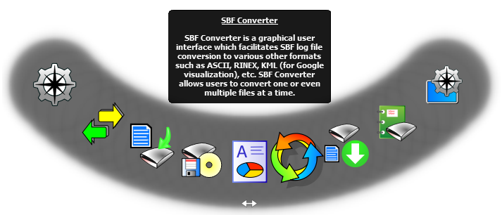

[
next
] [
prev
] [
up
]
Chapter 4
SBF Converter

4.1
Introduction
4.1.1
SBF Converter compatibility
4.1.2
Launching SBF Converter
4.2
Using SBF Converter : a worked example
4.2.1
Conversion to RINEX
4.2.2
Conversion to ASCII
4.2.3
Conversion to Google Earth KML
4.2.4
Conversion of Commands
4.2.5
Conversion to GPX
4.2.6
Conversion of SBF Blocks
[
next
] [
prev
] [
up
]